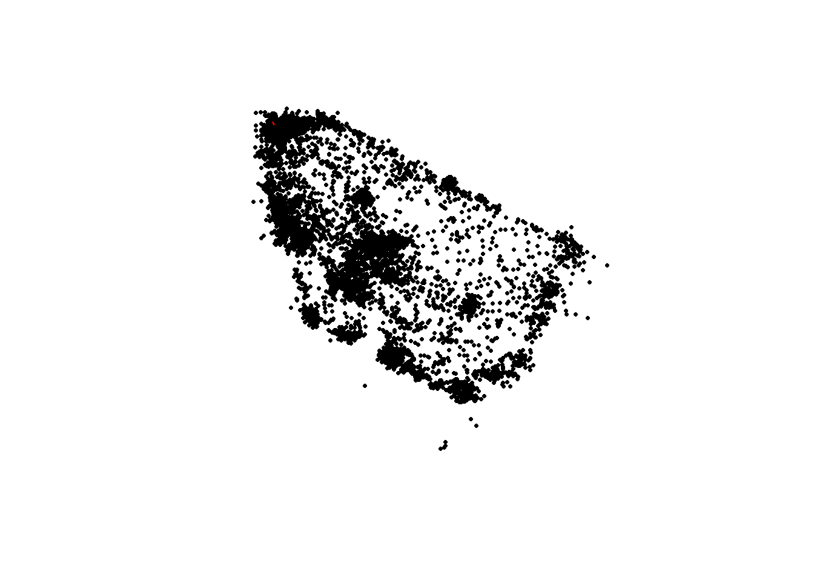
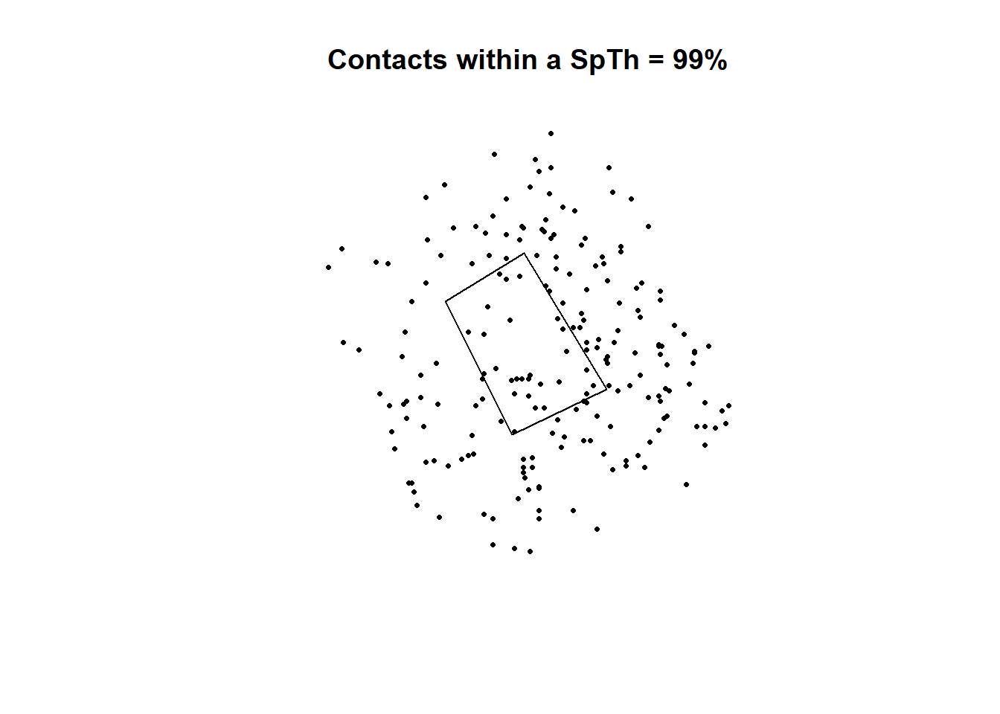
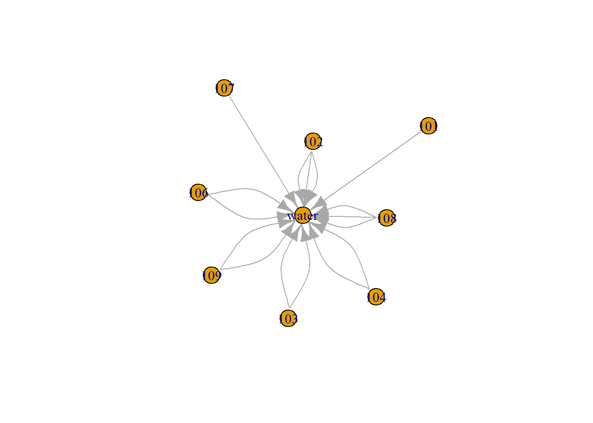

RLTS Contacts
R Package from the Lanzas Lab: https://github.com/lanzaslab/contact
# devtools::install_github("lanzaslab/contact")
library(contact)##
## Attaching package: 'contact'## The following object is masked _by_ '.GlobalEnv':
##
## calveslibrary(dplyr)##
## Attaching package: 'dplyr'## The following objects are masked from 'package:stats':
##
## filter, lag## The following objects are masked from 'package:base':
##
## intersect, setdiff, setequal, unionlibrary(sf)## Linking to GEOS 3.6.1, GDAL 2.2.3, PROJ 4.9.3Here is an example of how to read all the sheets in a data frame from a xlsx file.
L <- list()
for(g in 2:5){
# g <- 5
L[[g]] <- readxl::read_xlsx(path = "../../Box Sync/MPVM/RP/PERU 2016 DATA/Vacunacion/Data/VacDepDisProv_2016.xlsx", sheet = g)
L[[g]]$species <- i
}
DF <- do.call(rbind, L)Create a point-location-based environmental contact network
The network will represent contacts between calves in a single feedlot pen with theut water source. We will identify the number of “contacts” each individual had with the water sourcein the pen. A “contact” is defined as occuring when point-locations were within a pre-determine spatial-treshold distance (SpTh) of the water source. We wil set a SpTh of 0.333 m (i.e. the approximate distance from RFID tags to calves noses), then re-define this SpTh to account for RTLS accuracy using the findDistTresh function.
data("calves")
calves %>%
head()## calftag x y time date
## 1 101 63.38 47.43 00:00:14 05-02-2016
## 2 101 63.48 46.59 00:00:22 05-02-2016
## 3 101 62.90 47.07 00:00:26 05-02-2016
## 4 101 63.27 47.26 00:00:34 05-02-2016
## 5 101 63.04 46.62 00:00:38 05-02-2016
## 6 101 63.53 47.24 00:00:42 05-02-2016Ensure all required columns exists in the dataset.
# we must append the columns date and time together first:
calves <- calves %>%
mutate(DateTime = paste0(date, ":", time)) %>% # Paste the date and time volumns
mutate(DateTime = as.POSIXct(DateTime, format = "%m-%d-%Y:%H:%M:%S")) # Format as date time (POSIXct)Calculate the distances between the water polygon and the calves at each time step
waterSp <- cbind(x = c(61.43315, 61.89377, 62.37518, 61.82622, 61.43315), y = c(62.44815, 62.73341, 61.93864, 61.67411, 62.44815)) # this is the location of the water source
waterSp <- st_polygon(list(waterSp)) # convert to a spatial polygon
# convert the calves location to spatial points
calvesSp <- calves %>%
st_as_sf(coords = c("x", "y"))
# Visualize the data:
# Plot the calves
calvesSp %>%
st_geometry() %>%
plot(pch = 16, cex= 0.5)
# Plot the water source
waterSp %>%
st_geometry() %>%
plot(add = T, col = "red")
# Calculate the distance to water source
calvesSp$WaterDistance <- st_distance(calvesSp, waterSp)
# Plot the ones that are within the SpTh
## Plot the calves
calvesSp %>%
filter(WaterDistance <= 0.333) %>% # Filter the ones that are below the SpTh
st_geometry() %>%
plot(pch = 16, cex = 0.5, main = "Contacts within a SpTh = 0.333")
## Polot the water source:
waterSp %>%
st_geometry() %>%
plot(add = T)
Identify the optimal SpTh value that will allow us to capture 99% of the contacts, defined as instances when point locations were within 0.33 m of the water trough
SpThValues<-contact::findDistThresh(n1 = 1000, n2 = 1000, acc.Dist1 = 0.5, acc.Dist2 = NULL, pWithin1 = 90, pWithin2 = NULL, spTh = 0.5)
SpThValues## mean 5%-CI 10%-CI 15%-CI 20%-CI 25%-CI 30%-CI 35%-CI 40%-CI 45%-CI 50%-CI 55%-CI 60%-CI 65%-CI 70%-CI 75%-CI 80%-CI 85%-CI 90%-CI 95%-CI 99%-CI max
## 0.7083008 0.7089866 0.7096751 0.7103692 0.7110716 0.7117857 0.7125150 0.7132635 0.7140361 0.7148384 0.7156776 0.7165626 0.7175055 0.7185222 0.7196361 0.7208820 0.7223169 0.7240447 0.7262903 0.7297366 0.7364722 1.9767089CI_99<-unname(SpThValues[21]) #we will use this SpTh value moving forward.SpThValues will have the distances that captures the % of the population, we will use the value 0.7353102 which represents the 99%.
calvesSp %>%
filter(WaterDistance <= CI_99) %>% # Filter the ones that are below the SpTh
st_geometry() %>%
plot(pch = 16, cex = 0.5, main = "Contacts within a SpTh = 99%")
## Polot the water source:
waterSp %>%
st_geometry() %>%
plot(add = T)
water_edges <- calvesSp %>%
data.frame() %>%
filter(WaterDistance <= CI_99) %>%
group_by(from = calftag) %>%
summarise(to = "water", durations = n())calvesSp %>% data.frame() %>%
filter(WaterDistance <= CI_99) %>%
arrange(calftag, DateTime) %>% # Order by time and ID
mutate(Interval = DateTime - lag(DateTime)) %>% # Difference from previous
group_by(calftag) %>%
mutate(Interval = replace(Interval, row_number() == 1, NA)) %>%
ungroup(calftag) %>%
mutate(Contact = ifelse(abs(Interval) >= (5*60) | is.na(Interval), 1:n(), NA)) %>%
do(zoo::na.locf(.))# Identify if contact was initiated## # A tibble: 205 x 8
## calftag time date DateTime geometry WaterDistance Interval Contact
## <int> <chr> <chr> <dttm> <POINT> <dbl> <dbl> <int>
## 1 101 00:47:43 05-02-2016 2016-05-02 00:47:43 (62.69 62.46) 0.539 8 1
## 2 101 00:47:47 05-02-2016 2016-05-02 00:47:47 (62.33 62.23) 0.112 4 1
## 3 101 00:47:59 05-02-2016 2016-05-02 00:47:59 (62.09 61.76) 0.0371 12 1
## 4 101 00:48:15 05-02-2016 2016-05-02 00:48:15 (61.11 61.84) 0.563 16 1
## 5 101 00:48:36 05-02-2016 2016-05-02 00:48:36 (62.55 62.53) 0.456 21 1
## 6 101 00:48:44 05-02-2016 2016-05-02 00:48:44 (62.38 62.57) 0.331 8 1
## 7 102 00:39:04 05-02-2016 2016-05-02 00:39:04 (62.69 61.87) 0.322 8 8
## 8 102 00:39:16 05-02-2016 2016-05-02 00:39:16 (61.88 62.89) 0.157 12 8
## 9 102 00:39:24 05-02-2016 2016-05-02 00:39:24 (62.05 63.23) 0.521 8 8
## 10 102 00:39:28 05-02-2016 2016-05-02 00:39:28 (62.77 62.31) 0.530 4 8
## # ... with 195 more rows # group_by(calftag, Contact) %>%
# summarise(Duration = sum(Interval, na.rm = T), DateTime = first(DateTime))Calves_Edges <- calvesSp %>% data.frame() %>%
filter(WaterDistance <= CI_99) %>%
arrange(calftag, DateTime) %>% # Order by time and ID
mutate(Interval = DateTime - lag(DateTime)) %>% # Difference from previous
group_by(calftag) %>% # Gourp by calftag for identifying intervals
mutate(Interval = replace(Interval, row_number() == 1 | abs(Interval) >= (5*60), NA)) %>% # New contacts defined for a contact with interval larger than 5 min
ungroup(calftag) %>%
mutate(Contact = ifelse(is.na(Interval), 1:n(), NA)) %>% # get a contact ID based on the number of row
do(zoo::na.locf(.)) %>% # Replace NAs with the ContactID
group_by(from = calftag, Contact) %>% # Sum the duration by contact ID
summarise(Duration = sum(Interval), DateTime = first(DateTime)) %>%
mutate(to = "water") %>%
select(from, to, DateTime, Duration, Contact)G1 <- igraph::graph_from_data_frame(Calves_Edges)## Warning in if (class(newval) == "factor") {: the condition has length > 1 and only the first element will be usedplot(G1)
We will define our distance treshold based on what we did before. Might not mkake a lot of sense.
# FUnction to get the contacts
CreateNetwork <- function(DF, DTh){
# DF <- calves
# DTh <- CI_99
TimePoints <- DF %>% # Get unique timepoints
distinct(DateTime)
D_DF <- data.frame(Var1 = NA, Var2 = NA, Distance = NA, DateTime = TimePoints[1,]) # Create a data frame to fill with the data
# Loop to get the contacts
for(i in 1:nrow(TimePoints)){
# i <- 1
SP_i <- calvesSp %>%
filter(DateTime == TimePoints[i,])
D_DF_i <- expand.grid(SP_i$calftag, SP_i$calftag) # Create a data frame for all combinations of possible Origin-Destination
V1 <- match(D_DF_i$Var1, SP_i$calftag) # match variables from the O-D data frame to the spatial points for origins
V2 <- match(D_DF_i$Var2, SP_i$calftag) # match variables from the O-D data frame to the spatial points for destinations
# Calculate distance
D_DF_i$Distance <- st_distance(SP_i[V1,], # order by matched origin variables
SP_i[V2,], # order by matched Destination variables
by_element = T)
D_DF_i <- D_DF_i %>%
mutate(DateTime = TimePoints[i,]) %>%
filter(Var1 != Var2) %>% # Exclude the ones that are same origin-destination
filter(Distance <= DTh) # Filter to the ones that are under the Spatial treshold
D_DF <- rbind(D_DF, D_DF_i)
}
return(D_DF)
}
Calces_Edges <- CreateNetwork(DF = calves, DTh = 10)Calces_Edges %>%
group_by(Distance, DateTime) %>%
summarise(V1 = first(Var1), V2 = first(Var2)) %>%
head(10)## # A tibble: 10 x 4
## # Groups: Distance [10]
## Distance DateTime V1 V2
## <dbl> <dttm> <int> <int>
## 1 0.240 2016-05-02 01:01:23 109 106
## 2 0.320 2016-05-02 01:01:11 109 106
## 3 0.336 2016-05-02 01:01:19 109 106
## 4 0.361 2016-05-02 01:01:27 109 106
## 5 0.443 2016-05-02 00:58:01 108 102
## 6 0.489 2016-05-02 01:10:29 108 105
## 7 0.493 2016-05-02 01:13:11 108 101
## 8 0.497 2016-05-02 01:25:06 110 109
## 9 0.587 2016-05-02 01:27:00 110 104
## 10 0.588 2016-05-02 01:34:39 106 102The next ste will be to identify unique contacts like we did in the water contacts, I’ll have a look to that and update the code